Is Taking Honey Every Day the Secret to Controlling High Blood Pressure in Less Than 1 Month?
Find out how this Italian honey is clearing arteries and helping thousands of people overcome high blood pressure.
If You’ve Done Everything They Told You and the Number Still Won’t Go Down, This Is for You…
Let me guess.
You cut out salt. Completely.
You walk. Maybe every day.
You take what they prescribed. Losartan. Lisinopril. Amlodipine. Maybe a diuretic too. Maybe you’re on two medications now because one stopped being enough.
You bought the blood pressure monitor. And you check it. In the morning, after dinner, and sometimes at 2 in the morning.
And the number is still there.
160 over 100. 168 over 104. 170 over 110 on a bad week.
But it doesn’t have to be this way anymore.
My Worst Case as a Cardiologist
My name is Dr. Richard Colton. I’m a Yale-trained cardiologist, and for decades I was one of the leading surgeons at the Mayo Clinic.
31 years of practice. Thousands of surgeries. Thousands of lives saved.
I’m not telling you this to brag. I’m telling you because none of that experience prepared me for the most difficult case of my entire career — one involving my own last name.
My own wife, Diane.
Ellie’s 7th Birthday
Diane and I have been married for 41 years.
That Saturday was our granddaughter Ellie’s seventh birthday.
Diane had been up since 6 in the morning making the cake. Yellow cake, with the frosting Ellie asks for every year.
And 7 candles, because Ellie herself had counted them one by one the night before and lined them up on the counter so nobody could get it wrong.
The house was full. Our son, our daughter-in-law, the neighbors, four kids running around the living room.
Diane was carrying the cake out of the kitchen when she stopped.
I remember her setting the cake down on the counter. She set it down carefully. That’s the part I can’t get out of my head. She was collapsing, and yet she still set the cake down carefully.
I remember her hand pressed flat against her chest.
I remember her saying, “Rich,” and it didn’t sound like her voice.
Then she dropped to her knees on the kitchen floor.
Someone called emergency services. Someone got the kids out of the room. I was on the floor holding her, telling her to look at me. She was gray. Her lips had turned a color I had never seen on a person before.
Ellie’s cake sat on that counter, with seven unlit candles sticking out of it, for the next eleven hours.
What They Told Us at the Hospital
Diane had suffered a heart attack. They said it was mild.
There’s nothing mild about seeing your wife on the floor.
That night she was in a hospital bed, stable, connected to a monitor. And a doctor came in, looked at her chart and asked — politely, to be fair, he wasn’t rude — he asked:
“Her blood pressure has been high for a long time. Has she been taking her medication properly? And did she really cut out salt?”
I want you to understand what he was really asking.
He was asking whether my wife had done this to herself.
And her number was still 168 over 104.
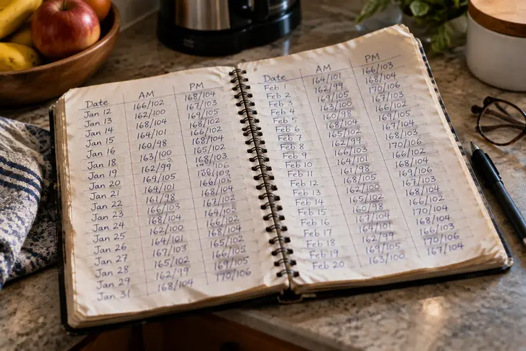
She followed every instruction they gave her for 9 years. She still had a heart attack on her granddaughter’s birthday.
And the first question in that hospital room was whether she had tried hard enough.
That’s where all of this began.
The Man in the Cafeteria
Two days later, I was in the hospital cafeteria at 7 in the morning because I couldn’t stand being in that room anymore.
There was an older gentleman a few tables ahead of me. Easily 80 years old.
His plate had two eggs, four slices of bacon, and fried potatoes. And I watched him pick up the salt shaker and cover his entire plate with it. Twice.
The woman sitting with him — his daughter, I assume — said something. He laughed and answered something I only heard halfway. But I heard the end clearly:
“My doctor says my blood pressure is the only thing about me that still works right.”
And I sat there with my cold coffee, thinking about my wife upstairs.
A woman who hadn’t tasted salt in 6 years.
Hooked up to a monitor.
One question hit me at that table and didn’t leave me alone for four months:
Why not him? Why her?
Throughout my entire career as a cardiologist, I had applied the same protocol to everyone.
Reduce salt. Lose weight. Walk. Take the medication. Come back in six months.
If salt were the problem, he should have been in that hospital room.
But he wasn’t.
She did everything right, and she was the one lying in that bed.
So salt wasn’t the answer.
Or at least it wasn’t the whole answer.
And neither was anything I had learned during decades as a cardiologist.
Before I Continue, I Need to Tell You About Something That Happened in 1945
On April 12, 1945, the President of the United States was sitting for a portrait when he said he had a terrible headache.
Two minutes later, he collapsed. He died that same day.
Franklin Roosevelt was 63 years old.
The cause was a cerebral hemorrhage.
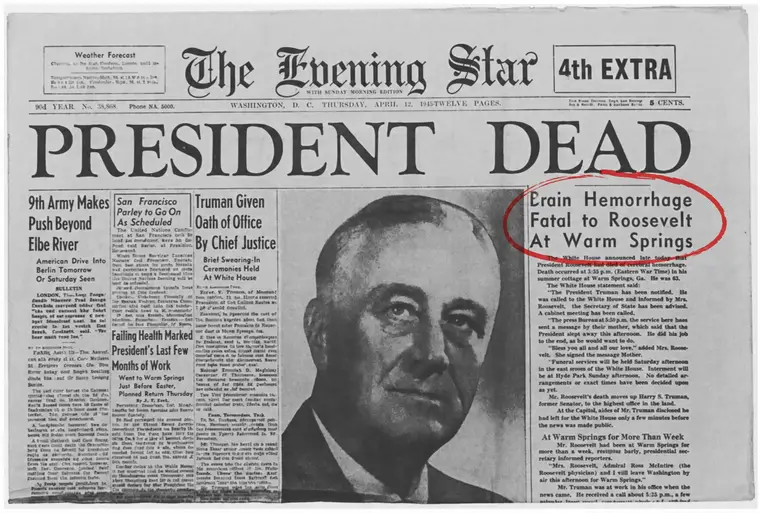
And his blood pressure that morning was over 300 over 190.
Now comes the part I need you to read carefully, because when I first read this, I had to get out of my chair and walk around the room.
Nobody treated it.
Not because of neglect. The man had the best doctors in the entire country at his disposal.
His personal physician had declared Roosevelt to be in good health with a blood pressure of 220 over 120.
Because at the time, medicine believed high blood pressure wasn’t a disease.
They believed it was a necessary compensation — that the body deliberately raised blood pressure in order to push blood to the organs, and that lowering it would be dangerous.
This wasn’t the opinion of some crazy doctor.
It was the consensus.
Respected doctors were still defending this idea in the 1950s.
The first real blood pressure medication didn’t appear until the late 1950s, more than 10 years after Roosevelt died.
The entire medical establishment once looked at high blood pressure and saw the wrong thing.
Not because they were stupid.
And not because they had bad intentions.
Simply because the missing piece hadn’t been discovered yet.
And if it happened once, it’s worth asking what might still be missing today.
And Then, That Same Year, Something Else Began
The war was over.
Factories that had been producing war materials needed something else to manufacture.
And that’s how “the age of plastic” began.
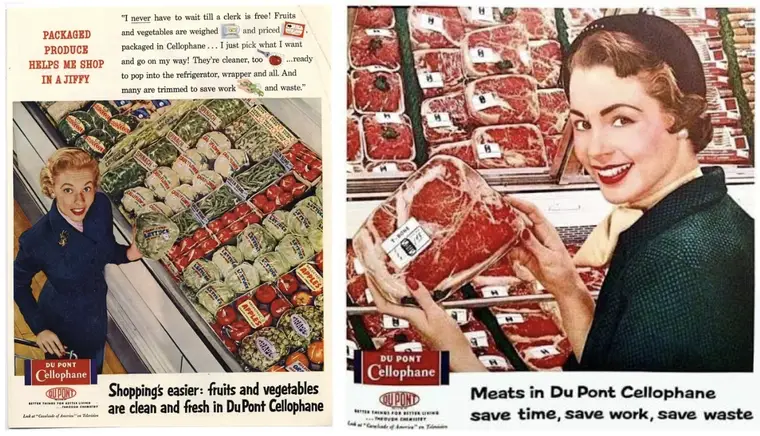
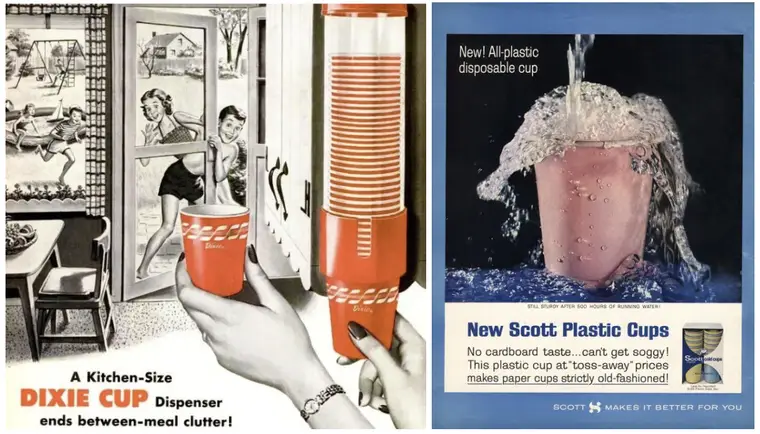
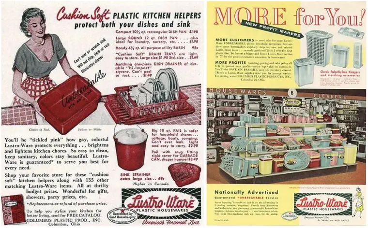
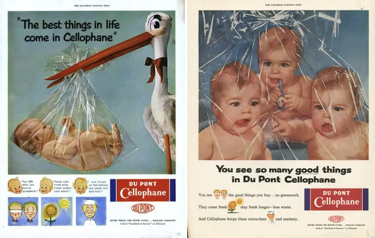
In 1950, the entire world produced around 2 million tons of plastic per year.
By 2024, it was producing more than 430 million tons.
More than two hundred times as much. Within a single human lifetime. Within your lifetime.
And year after year, plastic found its way into everything without anyone thinking it was strange:
None of this seemed dangerous at the time.
Quite the opposite — it was progress.
It was convenient. It was cheap. It was modern.
Since 1950, humanity has manufactured more than 8 billion tons of plastic.
And half of all that plastic was produced in just the last 20 years.
It doesn’t disappear. Plastic doesn’t rot like a banana peel.
It only breaks apart. Into smaller and smaller pieces.
Until those pieces become too small for the human eye to see.
And those pieces went into the water. Into the soil. Into the air inside your home. Into the food.
Nobody noticed it happening. There was no alarm.
But if you were born after 1950, you have been drinking, eating, and breathing these particles your entire life.
And there has never been a version of your life where this wasn’t happening.
What Medicine Discovered in 2024
For 4 months, I spent my nights reading research papers and medical journals in an armchair, from 9 at night until I fell asleep with a legal pad on my chest.
I didn’t read blogs. I didn’t watch videos.
I have access to the Yale library, and I went looking for the material you don’t find published everywhere.
Then, in March 2024, a study appeared in one of the most respected medical journals in the world, the New England Journal of Medicine, that stopped me in my tracks.
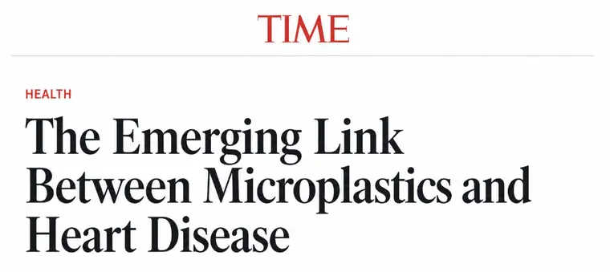
I’m going to tell you exactly what it said.
Italian doctors operated on patients to clear the artery in the neck — the one that carries blood to the brain.
There were 304 patients in total, and 257 of them were followed for approximately three years afterward.
The material removed from those clogged arteries was sent to a laboratory. And researchers looked at what was inside.
They found plastic. The same kind of plastic used in grocery bags.
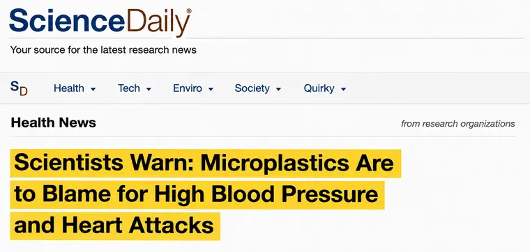
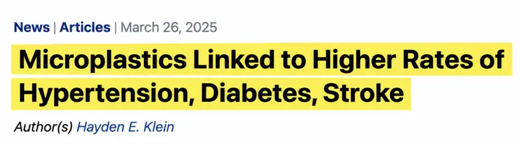
Not in one or two patients.
In 150 of them.
Nearly 6 out of every 10.
They put the material under a powerful microscope and photographed it.
Thousands of microscopic pieces of plastic.
And over the following three years, the patients who had plastic inside their arteries had approximately 4.5x greater risk of heart attack, stroke, or death than the patients who didn’t.
I had spent all those decades looking at clogged arteries without ever stopping to ask exactly what the blockage was made of.
And at 11 o’clock that night, sitting in that armchair, I finally understood everything.
What Happens Inside the Artery
It took me an entire summer to learn how to explain this in a way Diane could understand at the kitchen table. There are four steps. That’s it.
Step 1 — Microplastics Enter Your Body
Through the water. Through food. Through the air inside your home. It has already been found in human blood, lungs, and even the placenta.
Step 2 — They Damage The Inner Wall Of Your Artery
Your artery is soft and elastic. It has to be, because it opens and closes with every heartbeat. That’s around 100,000 beats a day.
Plastic is hard. And it has irregular, sharp edges.
It scrapes against that soft wall as it passes through. Every day. For decades.
Step 3 — Your Body Patches the Damage. And Never Stops.
When something injures you, your body sends substances that form a scab.
That’s what closes a cut on your finger. It’s a good system — it’s why you don’t bleed to death from a paper cut.
But the scab on your finger heals because the cut happened once and then it was over.
The injury inside the artery never ends. You can’t stop drinking water. So the body keeps patching, patching, patching.
Layer on top of layer. Year after year. Without ever switching off.
Passo 4 — That Layer Hardens And Turns Into Cement
And here’s the part nobody ever explained to you. That layer is sticky. And sticky things collect things.
It collects calcium passing through the blood. It collects fat. It collects more microscopic pieces of plastic.
All of it gets compressed together and hardens over the years. Until it becomes a hard crust stuck to the inside of your artery.
I started calling it arterial cement. Because that is literally what it is.
Here’s How High Blood Pressure Works…
If you want to understand your blood pressure in 10 seconds, forget everything else and picture a garden hose.
A new hose is soft. You squeeze it and it gives. Water flows through effortlessly. Now imagine that same hose with a layer of cement stuck to the inside.
The opening in the middle gets narrower. And the wall no longer bends. Water can’t flow through properly.
So what do you do?
You turn up the faucet.
And here’s the whole thing:
The pressure went up because of the cement. Not because of the water.
Your artery is the hose. Your heart is the faucet.
And the number you see on your monitor in the morning is your heart pushing harder because the hose has become narrow and rigid.
Now let me tell you what I realized in that armchair — and what made me angrier than I knew I could get:
I had spent my entire life looking in the wrong place. Not just me, but every doctor I had known up to that point.
Why Nothing She Did Ever Got Close to the Real Problem
This is the part I wish I had read years earlier.
Losartan, lisinopril, amlodipine.
They work, and I’m not going to sit here and tell you they don’t. What they do is tell the hose to relax and open a little wider.
That’s real.
But relaxing a hose with cement inside it doesn’t remove the cement. It’s like turning down the faucet while leaving the crust exactly where it is.
And that’s why so many people see their dosage increase over the years.
Then a second medication gets added.
Then a third…
Then I Found the Island That Doesn’t Have This Problem
Around the third month, I stopped asking, “What causes this?”
And I started asking a different question:
Is there somewhere in the world where people don’t have this problem?
That’s how I ended up in Sardinia.
Sardinia is an island in Italy.
The mountainous interior is one of the few places in the world researchers call a Blue Zone: places where far more people live healthy lives past the age of 100 than almost anywhere else.
But it wasn’t their age that caught my attention.
It was their food.
These people eat cured sausage, aged sheep’s cheese, salt, and drink red wine every day.
In their 90s.
Everything my wife had been forbidden to eat. Item by item.
And their blood pressure isn’t what you would expect from people who eat like that. So I went looking for something in the food on that island that we don’t have in ours.
Not the diet as a whole. Something specific.
And I found one.
The High Blood Pressure Eliminating Ingredient
In the mountains of Sardinia grows a tree called the strawberry tree.
It’s stubborn. It blooms out of season — in late autumn, when almost nothing else on the island is flowering.
And that’s why the bees there produce, once a year, a honey that practically doesn’t exist anywhere else on the planet.
It’s called corbezzolo honey.
It isn’t sweet like the honey you know. It’s bitter. And that bitterness is exactly what matters.
Because the bitter taste comes from a substance this honey contains that almost no other honey in the world has.
It’s called homogentisic acid.
You don’t need to remember the name.
You just need to understand what it does.
This acid is responsible for eliminating the accumulated crust inside the arteries, with an extremely powerful cleansing action.
That’s when something clicked in my head: In the villages in those mountains, people eat a spoonful of this honey every morning. Every day.
They’ve been doing it for centuries. But how could you actually get this honey?
It comes from a real harvest with real limitations. The tree blooms in late autumn, the harvest window is short, and in a bad year there is practically no crop at all.
It comes from a handful of producer families on a single island. If you find something claiming to be bitter Sardinian honey for a few dollars with free shipping, you’ve found a scam.
We Needed to Bring This to the World
So I started writing everything down.
Every compound. Every function. Every detail. Origin. Dosage. Ratio.
I documented it the same way I would document a clinical case — except this time I took it somewhere that could actually build it.
Because I was convinced the concept worked. We just needed to put it into the right format.
I knew I couldn’t do it alone. After 31 years in medicine, you know people. So I picked up the phone and called the one place I truly trusted: NLabs.
If you’ve never heard of them, let me explain. They’re not just another supplement company.
They’re an independent laboratory with no ties to Big Pharma that has been researching natural compounds for years.
They are one of the most awarded and respected laboratories in the United States and around the world.
And that’s why I called them instead of anyone else.
I spoke with the Director of Research. At first, he hesitated.
He listened to a cardiologist talking about bitter Italian honey and made exactly the face I would have made years earlier.
But when I showed him the literature on microplastics…
And what the compound in corbezzolo does…
He stayed silent for a long time. Then he said:
“Rich, if this holds up, this is one of the most revolutionary things in modern medicine.”
A few days later, we shook hands and the work began.
We spent months with the NLabs team. Test after test. Adjusting every ratio. Synthesizing the compound from the honey until we reached the required purity. Rebuilding the entire formulation.
And then, finally, we cracked the code. So I took the finished formula home to test it with my wife.
And here’s what happened.
What Happened to Diane
She started on a Monday in April.
That week her average was 168 over 104 — the number she had lived with for nine years.
-
DAYS 1 TO 3
One thing happened. And it was small. She woke up without that heavy feeling at the back of her neck.
Diane had been waking up every day feeling like she was carrying something behind her head, and she had already decided it was her pillow, her age, life.
-
DAY 7 — THE STEAK
It was her idea. She hadn’t eaten a properly seasoned steak in six years.
That Sunday, she cooked one, seasoned it with real salt, and ate it. I sat there watching with the blood pressure monitor beside me, honestly afraid.
One hour later, she checked.
141 over 91.
She checked again.
Then she went to the drawer, pulled out her notebook, and started flipping backward through the pages, looking for a reading that low. There wasn’t one. Not in 9 years of records.
-
FIRST MONTH
The symptoms disappeared in the reverse order they had arrived. The morning headache went first.
Then the dizziness when she stood up. The ringing in her ears slowly faded until one day she realized it wasn’t there anymore.
The tightness in her chest never came back. The middle-of-the-night episodes stopped — the ones where she would wake up at three in the morning with her heart racing, and we both called it anxiety because that was easier.
The swelling disappeared. And one Thursday, she put her wedding ring back on for the first time in two years.
-
SECOND AND THIRD MONTHS
The number stopped being an event. Her readings settled into the 130s and kept slowly coming down.
She stopped checking three times in a row. And she started eating like a normal person again.
Cheese. Salt. Sunday steak. Without calculating everything.
6 years. That’s how long she spent being afraid of food.
-
SIXTH MONTH
She took her notebook to her appointment. I wasn’t the one who showed it to the doctor — she was.
And her cardiologist did something I saw very few times in 31 years:
He stopped. He flipped backward through the pages. And he started comparing the old readings to the new ones.
Then he looked at her and asked what she had changed. After we explained the treatment, he made the decision to stop prescribing Losartan and the diuretic to Diane.
That was the day she finally saw herself as free from hypertension forever.
What Ultimately Came Out of All This
After the success of Diane’s treatment, we decided to introduce it to the world.
We called it Cardio Clear.
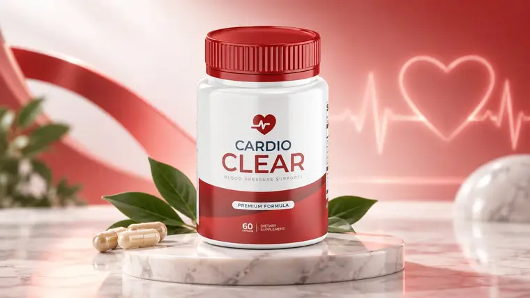
A natural formula developed to work in two areas: helping fight plaque buildup inside the arteries and creating protection against microplastic particles present in the bloodstream.
While traditional medications act mainly on blood pressure and blood vessel dilation, Cardio Clear was developed to act directly on arterial health, supporting the body’s natural protection and recovery mechanisms.
Its formula combines ultra-purified and clinically studied ingredients, including exclusive corbezzolo honey from Sardinia — a region famous for the extraordinary longevity of its centenarian population.
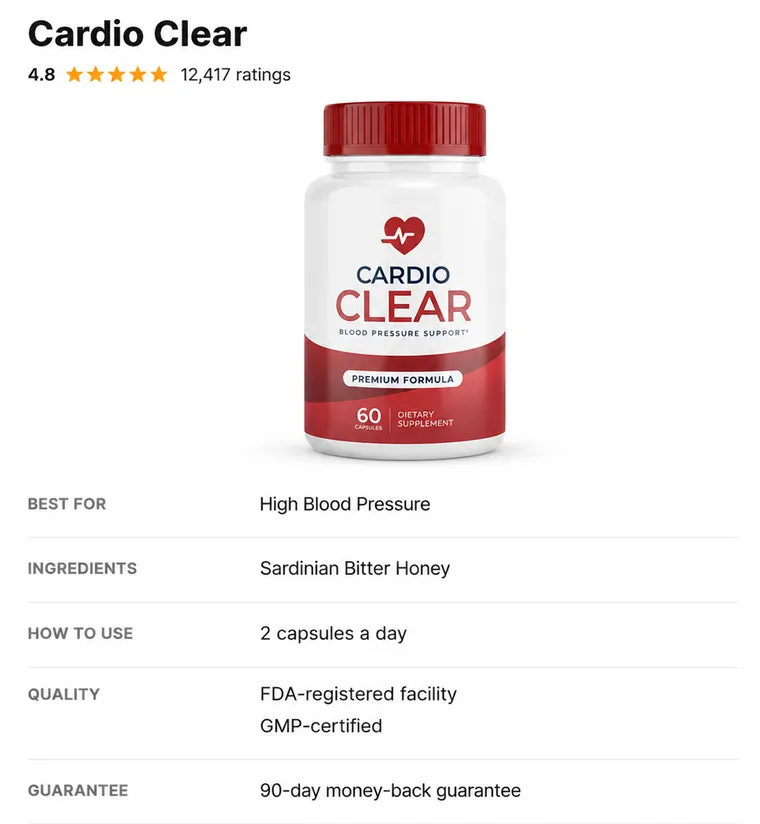
Who This Is For
For people who did everything and the number still didn’t come down. You cut out salt, took the medication, walked every morning, and still opened your monitor to see 165 over 100.
If you followed the rules and following the rules didn’t work, this was written for you.
For people already taking their second or third medication. Your dosage kept going up, or another pill was added, and nobody ever explained why the first one stopped being enough.
For people tired of eating like they’re serving a prison sentence. Years of flavorless, salt-free food is a price nobody deserves to pay.
For people who are afraid. The people who wake up at 2 in the morning and check their blood pressure because of tightness in their chest.
Who This Is NOT For
I’d rather lose the sale than sell you something that isn’t right for you.
It’s not for someone who wants results by next week. A crust that took thirty years to form doesn’t disappear in nine days, no matter what some video promised you.
If you aren’t willing to give it a few months, don’t spend the money. You’ll quit right before the part that matters.
It’s not for someone who is having a medical emergency right now.
The Decision My Team Hated
I know you’ve already spent a lot of money on this.
Appointments, tests, blood pressure monitors, medication every month, and probably three or four supplements someone swore would work.
Add it all up and you’ve already spent thousands. And you’re still here.
The medication itself, by the way, isn’t expensive. Generic losartan costs only a few dollars a month. The cost isn’t the price. It’s the fact that there is never a final bottle.
There is no month where you finish and it’s over. It goes the other way. That’s why you’re taking a second medication today instead of just the first.
And then there’s the cost that never appears on a receipt. Years of flavorless food. Becoming a prisoner to a blood pressure monitor. Living your life in constant fear.
So I did something my team hated.
I could charge a high price per bottle. Plenty of people would pay it.
But I don’t want to create another barrier for people who have already lost too much time and money — and I don’t want you stopping halfway because you ran out of product.
Because the biggest mistake is starting and stopping before six months. That’s exactly when the crust begins forming again and you end up right back where you started.
That’s why, today, the complete 6-month treatment costs the price of half of it. And here’s how it works:
You answer 5 quick questions to calculate your Arterial Cement Index.
At the end, you’ll see whether Cardio Clear makes sense for your situation.
And if it does, your price and complete-cycle package will appear with your result.
▶ VIEW MY ARTERIAL CEMENT INDEX →No Change, No Charge.
I know you’ve been disappointed before.
So I’m the one taking the risk.
Use Cardio Clear for 90 days.
Every morning, exactly as directed on the bottle. And write your readings down in your notebook.
If you reach the end and your number is exactly the same as it is today, send an email and ask for your money back. No interrogation. Nobody is going to tell you that you “used it wrong.”
You don’t return the bottles.
I don’t want them back. Want to confirm the guarantee is real before spending anything? Write to support before you buy.
You either keep the result or you keep your money.
The only thing you can’t do is stay exactly where you are.
Six Months From Now, You’ll Be Living One of Two Stories
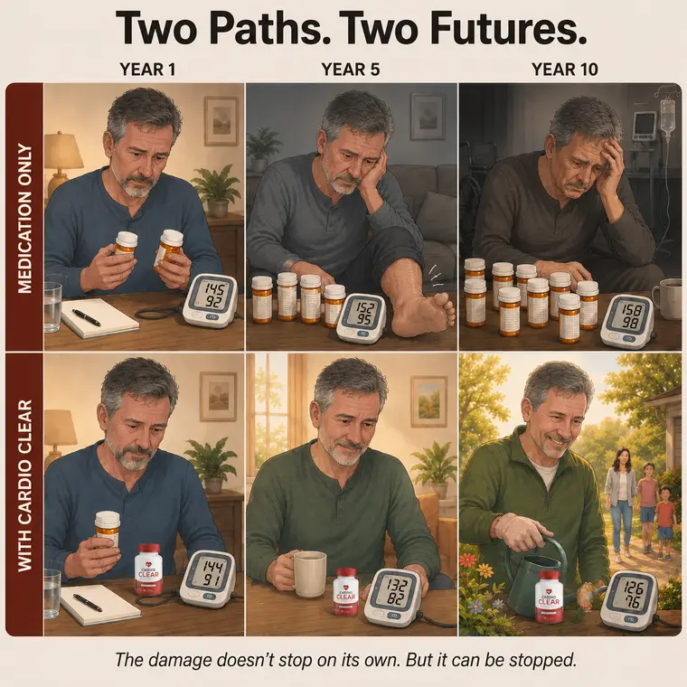
Now, it’s time to act.
You may not realize it, but at this exact moment you are standing at a crucial crossroads in your story.
And right now, you really have only two options.
Two paths leading to completely different futures.
Path One Is Familiar.
The Big Pharma path. You can keep doing exactly what you’re doing.
You can choose to do what the conventional healthcare system wants you to do. Spend the rest of your life swallowing chemical pills.
But if you do, understand this:
You will never be free.
Blood pressure medications, beta blockers, diuretics, and ACE inhibitors were not created to cure you or clean your arteries.
They were created only to control the symptoms, keeping you trapped in the pharmacy cycle until the day your heart can’t take it anymore.
That’s how the system works. It traps you in a life of dependence and side effects.
That is the financial cost of doing nothing. But the human cost is much greater. It’s the feeling of living with a ticking time bomb in your chest.
It’s the fear that at any moment an artery in your brain could rupture, causing a stroke, leaving you disabled, trapped in a bed, dependent on your children to change your diapers and bathe you.
I know that’s difficult to hear, but it’s the reality for people who ignore hypertension. You’ll desperately try to lower your blood pressure by cutting out salt and eating tasteless food.
But remember: No salt-free diet or walk in the park ever had a real chance of working until now. And now you know why.
Because the problem isn’t salt. It’s arterial cement.
Path Two Is Different.
The door to a life with 120/80 blood pressure and clean arteries is right in front of you.
I opened that door for you.
All you need to do is have the courage to walk through it.
Imagine the relief of going to the doctor and seeing the shocked expression on his face when he says:
“Your blood pressure is perfect. We’re going to discontinue the medication.”
The decision is in your hands.
Now you know why nothing you’ve tried until today ever came close.
Answer the five questions.
Your result appears in less than a minute.
▶ VIEW MY ARTERIAL CEMENT INDEX →